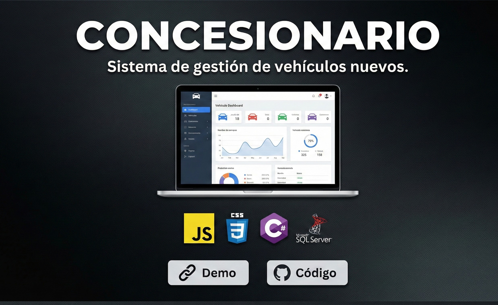
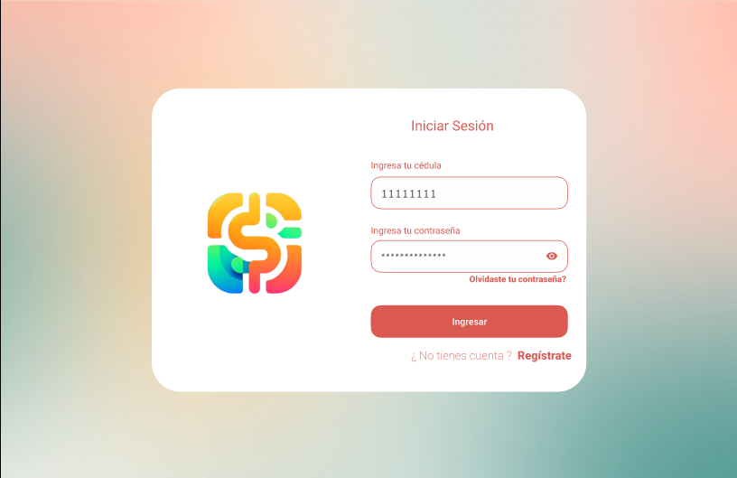

Jesús Adrián Otero
Analista Funcional de Sistemas | Desarrollador de Software
Desarrollador de software con experiencia en análisis funcional de bases de datos, soporte de sistemas misionales, aseguramiento de procesos, bases de datos Oracle, pruebas funcionales y seguimiento de mejoras. Enfocado en la identificación y solución de incidentes, validación de requerimientos y trabajo colaborativo entre áreas técnicas y funcionales.
Contáctame
Experiencia Laboral
Analista Funcional de Sistemas Misionales
Consorcio ITS
Febrero 2026 - ActualidadAseguramiento del proceso contravencional y control de legalidad en el aplicativo QITS (Cobro Coactivo). Gestión y depuración de información en bases de datos Oracle mediante consultas SQL, soporte funcional de segundo nivel, análisis de incidentes, escalamiento y seguimiento de mejoras. Participación en pruebas funcionales, despliegues y validación de versiones en ambientes de preproducción y producción.
- Oracle
- SQL
- Análisis de Requisitos
- Pruebas QA
- Soporte N2
Auxiliar TI / Soporte Técnico
Integración Solar S.A.S
Julio 2025 - Febrero 2026Desarrollo, administración y mantenimiento del sitio web institucional, asegurando su funcionamiento, optimización técnica, actualización de contenido y soporte a estrategias digitales.
- HTML5
- JavaScript
- CSS3
- React
Asistente Tecnológico
Patrimonio Inmobiliario S.A.
Mayo 2024 - Julio 2025Administración, diseño y mantenimiento del sitio institucional y creación de landing pages para campañas, incluyendo el micrositio de Villas de Altovento. Gestión de anuncios en Meta Ads y Google Ads para captación de leads.
- HTML5
- JavaScript
- CSS3
- React
- Google Ads
- Meta Ads
Practicante de Comunicaciones
Corporación Fenalco Solidario Colombia
Mayo 2023 - Noviembre 2023Administración del sitio institucional y landing page del evento anual de sostenibilidad. Auditoría de desarrollos externos, gestión de CRM y ejecución de pruebas internas de software para asegurar la correcta operación del sistema.
- HTML5
- JavaScript
- CSS3
- React
- CRM
- Testing
Habilidades Técnicas
Análisis y Gestión
- Análisis funcional
- Levantamiento y validación de requerimientos
- Análisis de incidentes
- Soporte de segundo nivel
- Seguimiento de mejoras
- Gestión de despliegues
Bases de Datos
- Oracle
- SQL
- Consultas y validaciones
- Depuración de información
- SQL Server
Desarrollo de Software
- Java
- JavaScript
- React
- HTML5
- CSS3
- C#
Pruebas y Herramientas
- Pruebas funcionales
- Preproducción y producción
- Git
- GitHub
- Visual Studio Code
- IntelliJ IDEA
- iReport / JasperReports
Sistemas y Procesos
- QITS
- Sistemas misionales
- Proceso contravencional
- Control de legalidad
- Gestión de incidentes
- Validación de versiones
Proyectos Personales
Sitio Web de Portafolio
Diseño y desarrollo de mi página profesional para presentar experiencia, habilidades y proyectos.
Ver Proyecto
Concesionario
Sistema de gestión para vehículos nuevos y administración de información del concesionario.
Ver Proyecto
Gastos e Ingresos
Sistema de gestión financiera personal para registrar ingresos, gastos y movimientos.
Ver Proyecto